Scroll or pinch to zoom · drag to pan · double-click to zoom in
Initializing Digital Earth...
Transforming satellite imagery into actionable insights. Bridging Earth observation and machine learning to solve environmental challenges.
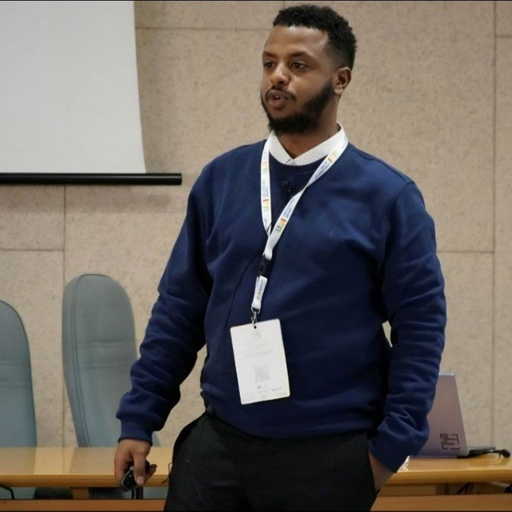
Passionate about using geospatial technology to understand and protect our planet
I am a dedicated researcher and educator passionate about leveraging Earth observation technologies to address environmental challenges. I lecture GIS and remote sensing at Haramaya University and serve as Co-PI and GIS / remote-sensing lead on an ESA / Future Earth project on smart cities and urban agriculture in eastern Ethiopia. I am completing the Erasmus Mundus Joint Master's in Copernicus Digital Earth (Paris Lodron University of Salzburg and Palacký University Olomouc).
With a strong foundation in GIS, remote sensing, and machine learning, I specialize in environmental modeling, species distribution analysis, and climate impact assessment. My research has been published in leading journals including Nature Scientific Reports, Journal of Environmental Management, and Journal of Hydrology.
Environmental modeling & ML
Lecturer at Haramaya University
Czech Republic (from Ethiopia)
Ethiopian
A journey of continuous learning across three continents
Paris Lodron University of Salzburg, Austria • Palacký University Olomouc, Czech Republic · Geo-Visualization & Communication track
Building strong programming foundations in Python, Java, R, and software engineering.
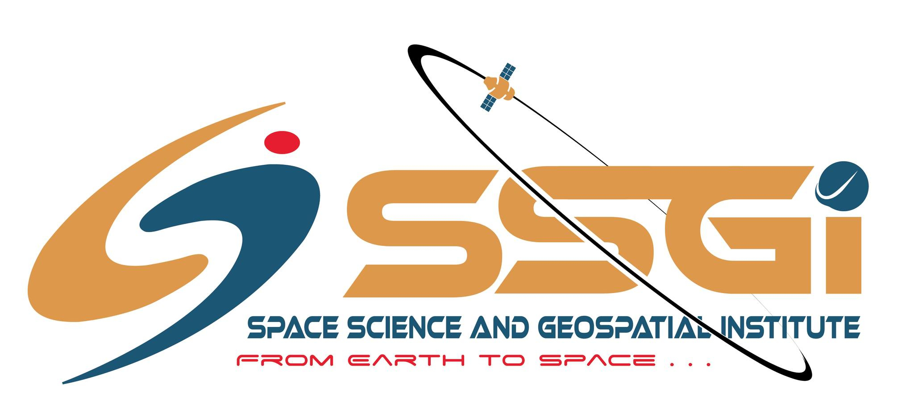
Thesis: "Characterizing and Modelling of The Spatiotemporal Trends of Rangelands as a Response to Prosopis Juliflora: A Case Study of the Middle Awash Basin, Ethiopia"
Graduated with Great Distinction. Foundation in GIS, cartography, and spatial analysis.
Technical proficiencies built over years of research and practice
Peer-reviewed research in leading international journals
Competitively funded research initiatives
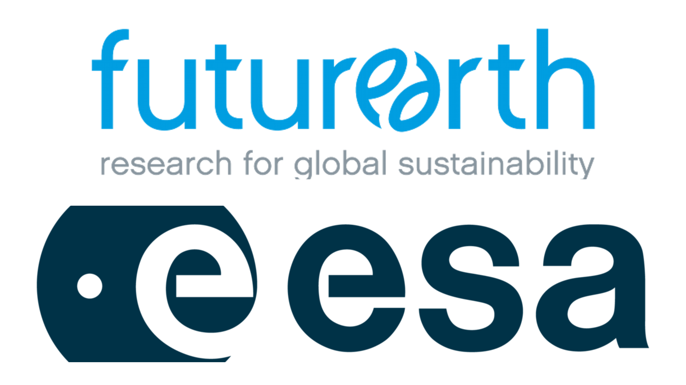
€25,000This international research initiative leverages Earth observation data from ESA's Copernicus programme to develop smart city solutions and enhance urban agriculture resilience across East Africa. The project integrates satellite imagery, machine learning, and geospatial analysis to address food security and sustainable urban development challenges.
Printed maps, posters and interactive web maps
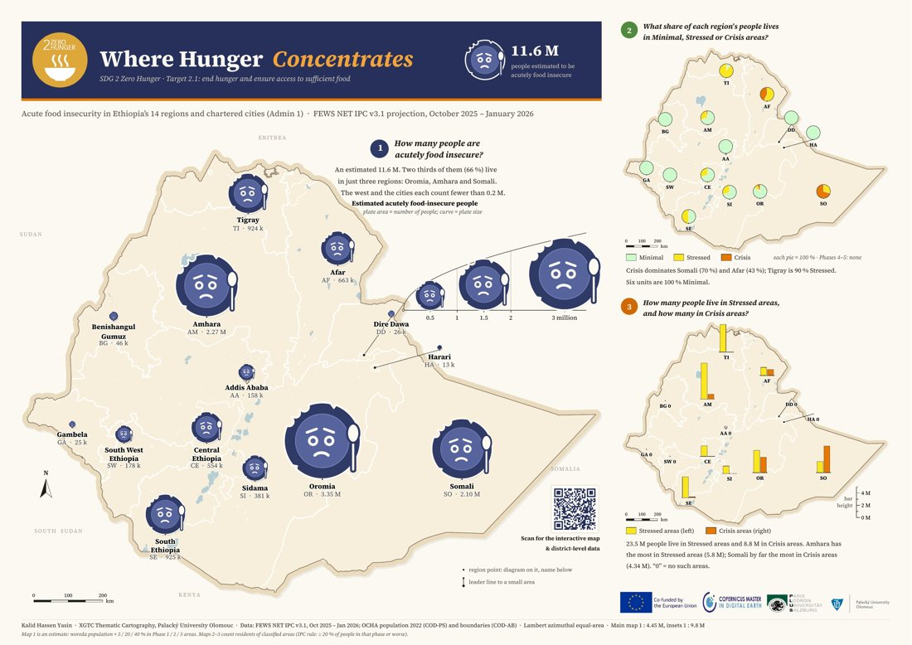
Poster · A2A thematic poster on SDG 2 target 2.1: an estimated 11.6 million people acutely food insecure across Ethiopia’s 14 regions and chartered cities. Proportional symbols carry the number of food-insecure people; companion pie and bar maps show the share living in Stressed and Crisis phases.
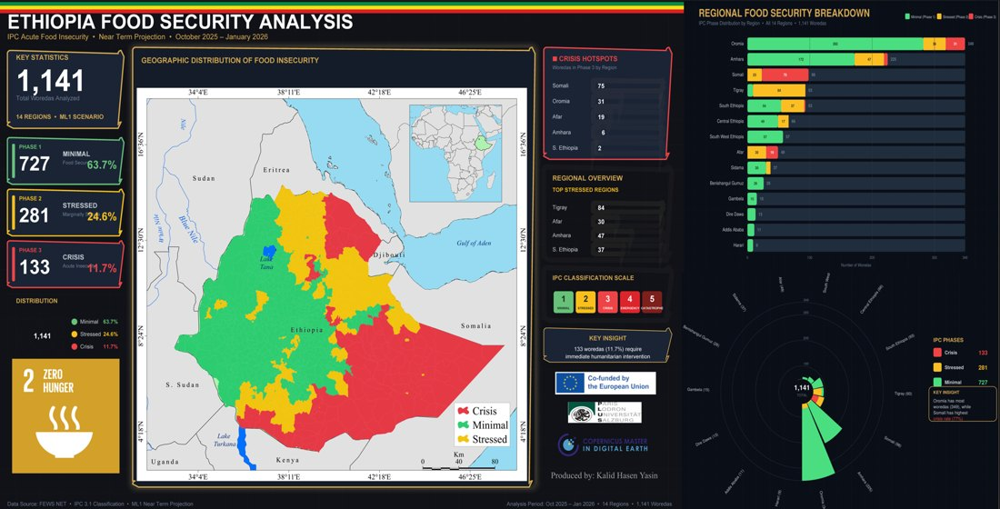
Map dashboardA dashboard-style map of IPC near-term projections (October 2025 – January 2026) for all 1,141 woredas: Minimal, Stressed and Crisis phases, with regional breakdowns, crisis hotspots and a classification key.
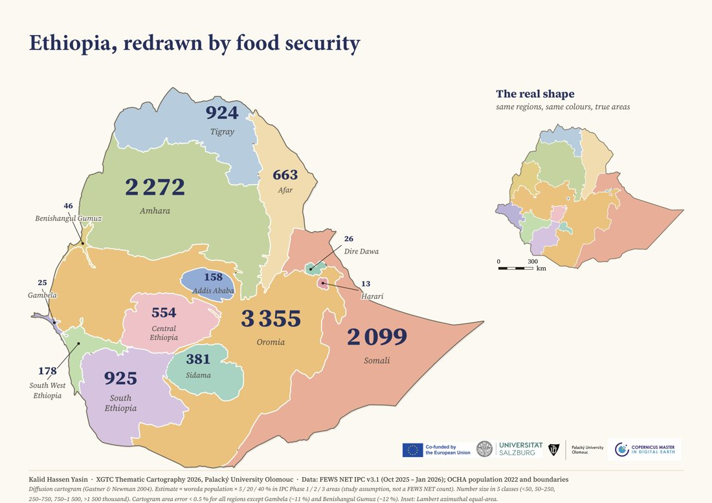
CartogramRegions are resized by the estimated number of people in IPC Phase 1–3 (Gastner & Newman 2004 diffusion cartogram), with the true-shape map as an inset in the same colours. Oromia (3,355 thousand), Amhara (2,272) and Somali (2,099) dominate.
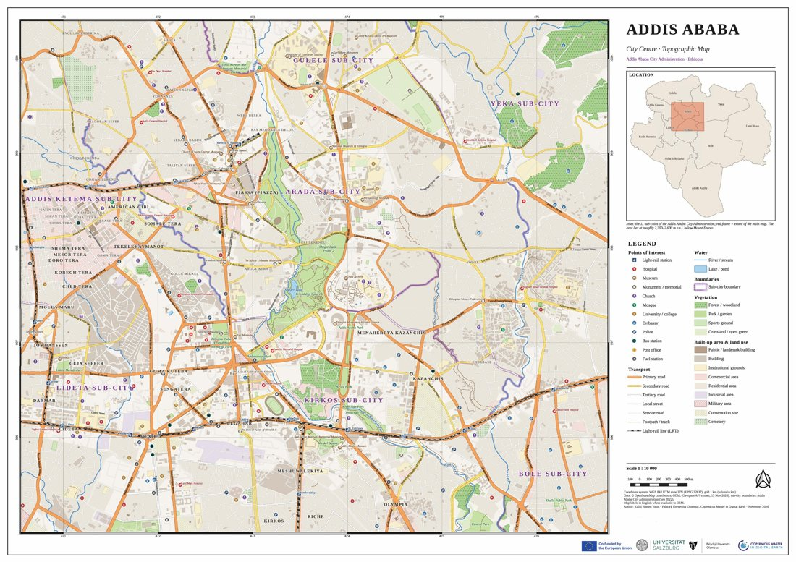
Topographic · 1:10 000A 1:10 000 topographic map of central Addis Ababa: sub-city boundaries, a full road hierarchy, light-rail lines, built-up and land-use classes, vegetation and points of interest, with a locator map and a complete legend.
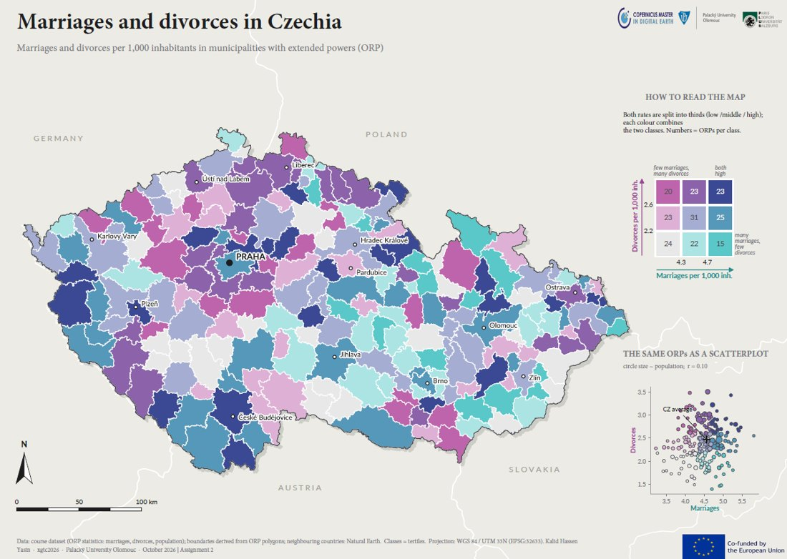
Bivariate choroplethA 3 × 3 bivariate choropleth combining marriage and divorce rates for municipalities with extended powers (ORP), with a how-to-read legend and a companion scatterplot of the same ORPs.
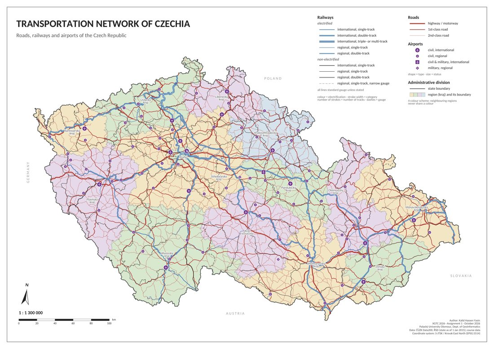
Reference · 1:1 300 000Roads by class, railways by electrification, gauge and number of tracks, and airports by type, over regional (kraj) boundaries.
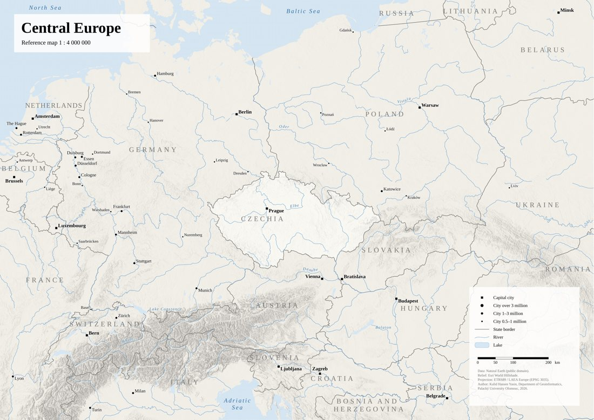
Reference · 1:4 000 000A small-scale reference map with shaded relief, rivers, lakes, borders and a city-size hierarchy. Data: Natural Earth; ETRS89 / LAEA Europe.
An interactive web dashboard of IPC acute food-insecurity projections (October 2025 – January 2026): woreda search, key statistics, regional rankings by crisis level and switchable basemaps.
A bivariate spatial analysis of IPC food-insecurity clustering at district (woreda) level.
Hot spot, outlier and emerging hot spot analysis of county-level SNAP participation rates across the contiguous United States, 2010 – 2019.
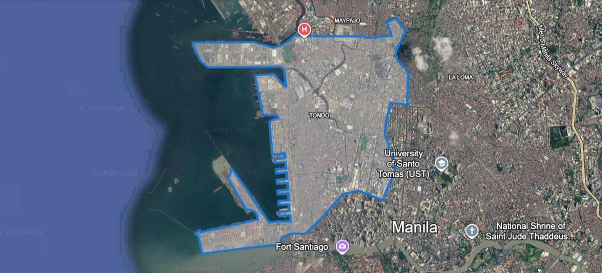
StoryMapWhere heat concentrates inside one of the densest urban districts anywhere, at neighbourhood detail and seasonal frequency, by fusing daily coarse and fine-resolution thermal satellite data.
A field story from the CIVIS Blended Intensive Programme on drones in the environmental sciences, Romanian Carpathians.
A team StoryMap (Timotej, Kalid, Tanmay, Adina) showing where to go to see the Bird of the Year.
Professional journey in academia and industry
Teaching GIS, remote sensing, and geodesy courses. Conducting research in environmental modeling. Supervising undergraduate thesis projects.
Leads the GIS and remote-sensing work of a €25,000 ESA / Future Earth project: flood susceptibility, groundwater potential and runoff modelling for eastern Ethiopian cities, and the project's web dashboard.
Mapped urban heat exposure in Tondo, Manila for MSF at neighbourhood detail and seasonal frequency, fusing daily coarse (MODIS) and fine-resolution (Landsat) thermal satellite data. Story map ↗
GIS consulting for economic development initiatives. Spatial analysis for regional planning and investment mapping.
Urban cadastral mapping projects. Digital land registration systems and spatial databases for property management.
Hands-on, credit-bearing experiences beyond the classroom
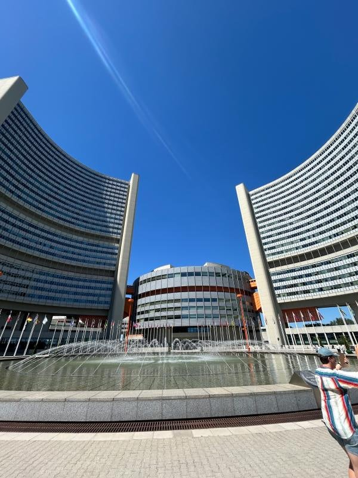
Excursion · Vienna 2026On 26 May 2026 our CDE cohort travelled from Salzburg to Vienna to follow the Earth-observation pipeline end to end — the Earth Observation Data Centre (EODC) with Austria's national supercomputing (VSC & MUSICA) in the morning, then UNOOSA and the UN-SPIDER disaster-response programme at the UN Office at Vienna. A full day on turning Copernicus data into knowledge, and knowledge into action. View more
International Summer School on the affective dimension of visualization, hosted online by the Department of Geoinformatics, Palacký University Olomouc (1–2 April 2026). Two days on emotions, perception, and where cartography is heading. View full report
A CIVIS Blended Intensive Programme on the use of drones (UAVs) in the environmental sciences, with the on-site week based in Sinaia, in the Romanian Carpathians. Alongside flight planning, photogrammetry and drone-based environmental monitoring, the surrounding Transylvania region — Brașov's Council Square, the UNESCO-listed Prejmer fortified church and the Ialomița Cave — became an open-air field laboratory. The programme blended online preparation with intensive hands-on fieldwork, and produced both a personal field blog and a technical group IMRaD report. See more
An internship at the Christian Doppler Laboratory GEOHUM, Department of Geoinformatics (Z_GIS), Paris Lodron University of Salzburg, carried out in partnership with Médecins Sans Frontières (MSF). The subject was urban heat exposure in Tondo, Manila — one of the most densely populated urban districts anywhere. MSF needed to know where heat concentrates inside the district: fine enough to speak to individual neighbourhoods, and often enough to follow how conditions shift through a season. Thermal satellites force a trade-off between the two. MODIS observes daily but at one kilometre, where the whole study area collapses into a handful of pixels; Landsat resolves a hundred metres but returns only every sixteen days, and tropical cloud cover removes most of those acquisitions. The task was to produce something that resolves both. See more
Presentations, seminars, and professional development
Universitat Jaume I, Castellón de la Plana, Spain
Tlemcen, Algeria
University of Ibadan, Nigeria
Addis Ababa, Ethiopia
Addis Ababa, Ethiopia
Cambridge Prisms
University of the People
Haramaya University
Aug–Sep 2023
Continuous professional development through MOOCs and workshops
Geoversity & ITC
2025
Geoversity & ITC
2025
EO AFRICA R&D Facility
2025
EO AFRICA & ITC
2025
Geo University
2025
Geo University
2025
Geo University
2025
Geo University
2025
Geo University
2025
Geo University
2025
ColumbiaX / edX
2022
IBM / edX
2022
IBM / edX
2022
HarvardX / edX
2022
CU Boulder / Coursera
2023
Udemy
2024
ALISON
2022
ALISON
2022
DelftX / edX
2022
HarvardX / edX
2022
Udemy
2024
Showing 21 of 30+ certificates from Geoversity, ITC, EO AFRICA, Coursera, edX, Udemy, ALISON, and more
Giving back through professional expertise
Provided GIS and spatial planning expertise to support urban development initiatives in the growing Sheger City metropolitan area.
Volunteered surveying and GIS mapping skills to support municipal land administration and urban cadastral development.
Let's discuss research collaboration, consulting, or opportunities
kalid.yasin@stud.plus.ac.at
kalidh84@gmail.com
Whatsapp: +251 923 328 893
+4367763480369
Olomouc, Czech Republic
(Originally from Ethiopia)